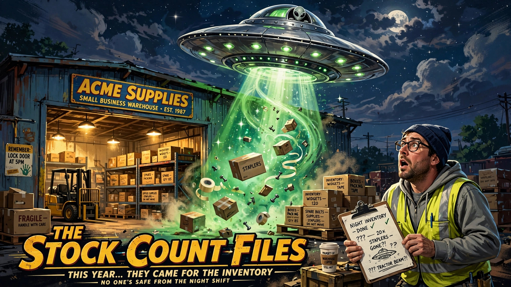
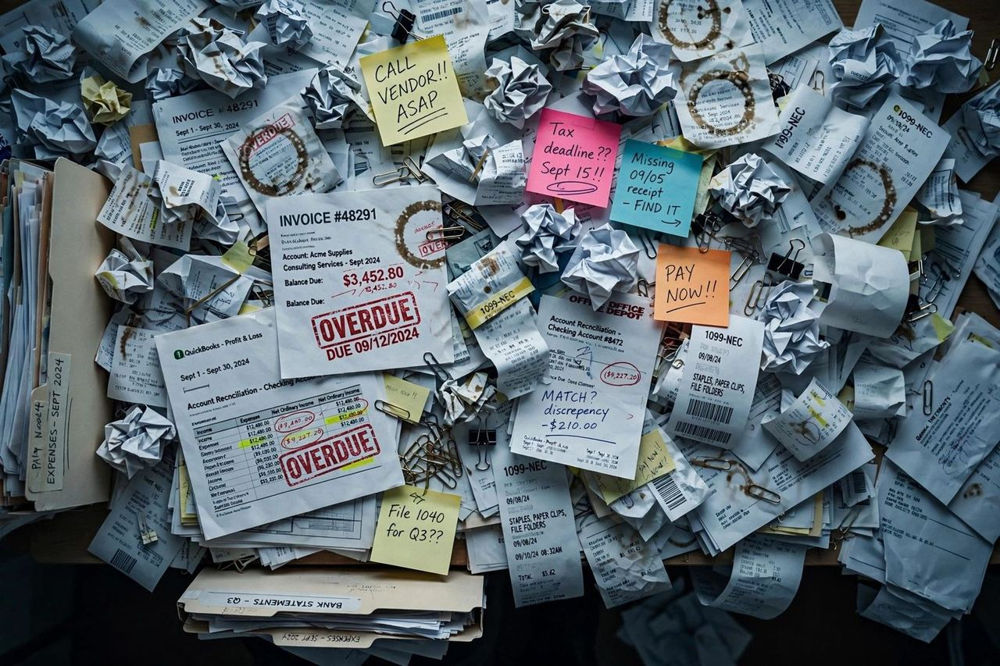

What 10,000 hours of bad gigs taught me about sales rejection
Oct 3, 2026 · 4:00 PM ET · 4 min read
10,000 hours of playing empty rooms taught me that sales rejection isn't about you — it's about the stage you're on.
Blog
Odoo how-tos, SAP Business One wisdom, and one wild card a day — tech, AI, sales, business growth, and whatever else is on my mind. New posts daily.
Oct 3, 2026 · 4:00 PM ET · 4 min read
10,000 hours of playing empty rooms taught me that sales rejection isn't about you — it's about the stage you're on.
Oct 3, 2026 · 12:00 PM ET · 3 min read
SAP Business One's pricing model trips up more business owners than you'd think. Here's what you truly pay for — no fluff.
Oct 3, 2026 · 8:00 AM ET · 5 min read
Most small businesses rush into Odoo without fixing their messy processes first. Here's what I see every single time — and how to avoid the chaos.
Oct 2, 2026 · 2:00 PM ET · 7 min read
My calendar has two bosses: my clients and my kids' school schedule. Guess which one never accepts a reschedule. What being a dad taught me about running a business on someone else's clock.

Oct 2, 2026 · 10:00 AM ET · 5 min read
What actually drives your SAP Business One timeline? Scope, data quality, and decision speed — not the number on the proposal.

Oct 2, 2026 · 9:00 AM ET · 16 min read
Odoo 20 launched September 24, 2026, and the headlines all scream AI. The real story is quieter: accounting guardrails that stop expensive mistakes, payroll that grew up, Field Service folding into Planning, a phone system worth using, and a Light User tier that changes the seat math. Here's the deep dive.

Oct 2, 2026 · 7:00 AM ET · 7 min read
Odoo 20 launched this week in Brussels, and the headline isn't another chatbot. The AI can now create and change real records in your ERP. Here's what that means for small businesses.

Oct 1, 2026 · 6:00 PM ET · 2 min read
Automation should remove work, not relocate it. Here are the five Odoo automation mistakes I see most often — and how to fix each one.

Oct 1, 2026 · 6:00 PM ET · 5 min read
If aliens landed tomorrow and asked to see how your business runs, would your ERP impress them — or would they assume we'd already been conquered by the spreadsheets?

Oct 1, 2026 · 4:00 PM ET · 8 min read
Back around 2016, I found Chromaleaf on the NAMM show floor while networking in Los Angeles. They custom-built me cables to chase Joe Perry's sound, and years later I sold them SAP Business One. Tech, work, and music, all in one story.

Oct 1, 2026 · 2:30 PM ET · 5 min read
SAP Business One 10.0 Feature Package 2608 brings Ask AI and AI-assisted queries to small businesses. Here's what's real, what's hype, and why the browser-based Web Client matters more than the AI headlines.

Oct 1, 2026 · 7:00 AM ET · 8 min read
Learn how Odoo WMS helps 3PLs reduce ghost inventory through accurate receiving, better on-hand visibility, disciplined cycle counting, and stronger warehouse management controls.

Oct 1, 2026 · 7:00 AM ET · 5 min read
Sales reps ignore your CRM pipeline setup because it’s too complicated. Here’s what actually gets used, and here is why Odoo’s approach works.

Sep 30, 2026 · 2:30 PM ET · 9 min read
SAP's public roadmap puts Version 11 in 2027, and every release between now and then is web-client-first. What the roadmap actually says, the under-the-radar features proving the browser already won, and the five things to do before 2027.

Sep 30, 2026 · 7:00 AM ET · 8 min read
When your Odoo server crashes at 2 AM and the support team is a ghost, open-source ERP becomes a double-edged sword. Here's what to do when the lights go out.

Sep 30, 2026 · 7:00 AM ET · 11 min read
Twenty people, zero patience for bloat. Here are the Odoo apps I'd turn on first, in order, and the ones I'd leave alone until you actually need them.

Sep 29, 2026 · 4:00 PM ET · 7 min read
Most people spend hours on reports nobody reads. Here is how I cut mine down and took my Friday back.

Sep 29, 2026 · 2:30 PM ET · 6 min read
SAP Business One's steep learning curve and high costs often overwhelm small teams. Here is when it is overkill and what actually works.

Sep 28, 2026 · 6:00 PM ET · 6 min read
Everyone wants AI to save their business. But if your process is broken, AI just helps you fail at machine speed. Fix the process first.

Sep 28, 2026 · 2:30 PM ET · 7 min read
SAP Business One isn't for giants. It's built for your coffee shop, bakery, or consulting firm that needs real accounting without the corporate fluff.

Sep 27, 2026 · 4:00 PM ET · 5 min read
Business rewards speed. Guitar punishes it. Here is what twenty years of chasing tone taught me about slowing down, and why the best things in work and life refuse to be rushed.

Sep 26, 2026 · 6:00 PM ET · 5 min read
Before you post that job listing, consider the hire that never sleeps, never quits, and costs less than your coffee budget. Here is what to automate first — and what to never hand to a machine.

Sep 26, 2026 · 7:00 AM ET · 7 min read
David Strausser shares lessons from auditing 50 chaotic QuickBooks files ahead of ERP migration. Focuses on Odoo's simplicity versus SAP Business One's complexity. No fluff, just real talk.
Sep 26, 2026 · 7:00 AM ET · 7 min read
David Strausser on replacing spreadsheet chaos with Odoo, one module at a time. Practical advice for SMBs drowning in Excel.

Sep 26, 2026 · 7:00 AM ET · 5 min read
Not every business problem needs a developer. Odoo Studio lets you build simple apps by clicking instead of coding — here is where it shines, where it breaks, and how to know the difference.
Sep 25, 2026 · 2:30 PM ET · 6 min read
Data migration is where ERP projects go to die — not because the software is bad, but because the data going in is a mess. Here's how to avoid becoming the next cautionary tale.

Sep 25, 2026 · 7:00 AM ET · 7 min read
Why inventory accuracy matters more than you think for Odoo users. The quiet metric that keeps your ERP from failing without flashy reports.
Sep 24, 2026 · 2:30 PM ET · 7 min read
How to avoid ERP chaos in 90 days: practical steps to get your team using the system, no jargon, no promises.
Sep 24, 2026 · 2:30 PM ET · 6 min read
Configuration vs customization in ERP: what each really costs, when custom work earns its keep, and a simple framework for deciding before the invoice decides for you.

Sep 24, 2026 · 7:00 AM ET · 7 min read
Why the lowest ERP quote often leads to costly headaches. David Strausser explains how cheap quotes hide hidden costs and why you should never pick the cheapest option.

Sep 23, 2026 · 7:00 AM ET · 8 min read
A single dad's practical guide to ERP go-live testing. Five checks that catch costly mistakes before production. No fluff, just what works.
Sep 23, 2026 · 7:00 AM ET · 7 min read
Implementation partners often overpromise timelines. Discover the real math behind their delays and how to spot when they're stretching the truth about your project's completion date.
Sep 22, 2026 · 6:00 PM ET · 6 min read
Why I'm writing every day: Odoo how-tos, SAP Business One wisdom, and one wild card daily. No fluff, no jargon — just stuff that actually helps.
Sep 22, 2026 · 4:00 PM ET · 7 min read
Thirty years of playing guitar taught me more about business than any MBA case study. Practice, timing, listening, and knowing when to solo.

Sep 22, 2026 · 4:00 PM ET · 6 min read
Dad, CEO, podcaster, guitarist — here's the actual morning system that lets me run a business and be present for my kid.
Sep 22, 2026 · 2:30 PM ET · 6 min read
The B1 add-on marketplace is huge and uneven. Here's how to tell the ones worth paying for from the shelfware — plus the categories that deliver.
Sep 22, 2026 · 2:30 PM ET · 7 min read
QuickBooks is great — until it isn't. Five unmistakable signs your business has outgrown it, and why SAP Business One is the natural next step.
Sep 22, 2026 · 7:00 AM ET · 7 min read
CRM here, accounting there, inventory somewhere else — the average SMB pays for a dozen disconnected apps. Odoo puts them under one roof for less.
Sep 22, 2026 · 7:00 AM ET · 7 min read
Odoo can replace a dozen apps and save you a fortune — if you implement it right. Seven hard-won lessons from the trenches.
Nothing matched. Try a different search.